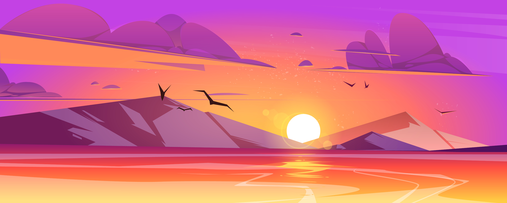

Почему сосредоточиться так
сложно
Многозадачность
Особенно сложно сосредоточиться, когда задач много и все они
— важные. Где же легендарная многозадачность, когда она так
нужна вам (и всем нанимающим менеджерам этого мира)? А дело
в том, что её просто не существует. Исследователи выяснили,
что мозгу тяжело концентрироваться даже на двух делах
одновременно. А когда в поле внимания попадает несколько
важных задач, организм паникует и выделяет кортизол и
адреналин — «гормоны стресса». Из-за этого мы работаем
невнимательно: ошибаемся и быстро устаём.
Дофамин
С гормонами стресса всё понятно, но дальше — ещё интереснее.
В нашей невозможности сосредоточиться замешана и полная
противоположность стрессу — дофамин. Это вещество участвует
в системе вознаграждения мозга. Причём тут он? Мы часто
отвлекаемся от важной задачи на что-то более «приятное» для
мозгов. Например, смотрим лайки в соцсетях. В это время и
выделяется дофамин — и мы чувствуем удовольствие. Получается
замкнутый круг: чем больше отвлекаешься, тем больше
удовольствия получаешь.
Что снижает концентрацию
внимания?
Многозадачность
Как концентрация может
снижаться из-за…
концентрации? Любая
стрессовая ситуация (и резко
меняющийся мир в целом)
заставляет наш мозг постоянно
«сканировать» окружающую
среду на предмет опасности.
Например, читать новости
вместо работы. Но быть
собранными всё время —
невозможно. Концентрация —
мышца, и она может не
выдержать, если не давать ей
отдохнуть.
Еда
«Быстрые углеводы» — сахар,
белый хлеб, сладости —
молниеносно доставляют в мозг
энергию и помогают ему лучше
работать. Но уходит эта
энергия также быстро, как и
приходит. А мы в результате
попадаем на «углеводные
качели»: как только действие
«быстрых углеводов»
заканчивается, мы чувствуем
усталость и сонливость. И
хотим ещё больше быстрых
углеводов.
Гаджеты
Да-да, это та самая ситуация,
когда на экране ноутбука —
код, в наушниках — подкаст, а
на компьютере фоном — ещё и
видео с забавными утятами. В
результате мозг пытается
переключиться с одной задачи
на другую — и просто не
может. А чтобы вернуться к
состоянию полной
концентрации, человеку в
среднем нужно 20 минут. Вот и
получается, что чем больше
времени мы проводим в
гаджетах, тем больше времени
затем нужно, чтобы вернуться
к работе.
Как концентрироваться лучше,
чем золотая рыбка (то есть
дольше трёх секунд)
5 простых (на самом деле не очень) советов
Представьте небо и облака
Или листья в ручье. Тут дело в лёгкой медитации, которая
помогает успокоиться. Ведь часто именно тревожные мысли о
сложных задачах как раз и мешают эти сложные задачи делать.
В такие моменты можно закрыть глаза и представить, что
чистое небо — это вы, а облака — тревожные мысли. И сколько
бы их ни было — ясное небо всегда будет где-то там, за
тучами, и никуда не денется. Это упражнение поможет
вернуться в настоящий момент, а не волноваться о
потенциальных проблемах из будущего.
Включите музыку
Но не любую, и не любимую. Любимая может быть связана с сильными положительными эмоциями, которые тоже очень сильно отвлекают. Подойдёт тихая, спокойная, умеренно-ритмичная. Можно вообще попробовать включить плейлист в «белым шумом» или нейромузыкой.
Прогуляйтесь
Или даже пробегитесь. Лучше найти парк или лес: один эксперимент показал, что созерцание природы повышает концентрацию, в то время как после просмотра городских пейзажей она наоборот понижается. Можно совместить прогулку с физическими упражнениями или бегом — так в мозг поступит ещё больше кислорода и он будет лучше работать. Но и простая двадцатиминутная прогулка — тоже отличный вариант.
Хорошо ешьте
Мы — не ваша бабушка, но это правда важно. Выбирайте продукты, которые препятствуют резким скачкам сахара в крови. Например, с высоким содержанием клетчатки: овощи, ягоды, бобовые (нут, чечевица, фасоль), коричневый рис, хлеб из цельнозерновой пшеницы.
Читайте
Настоящие бумажные книги. Это правда помогает с концентрацией: чтобы прочитать пост в соцсети, достаточно нескольких минут или даже секунд. А вот интересная книга способна затянуть и на несколько часов и круто тренирует направленное внимание.
А можно в картинках?
